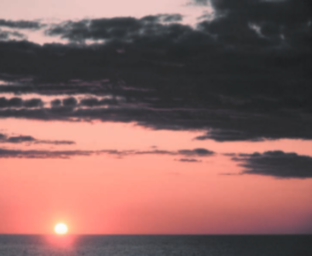
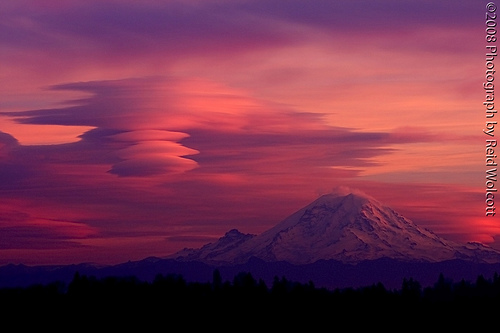
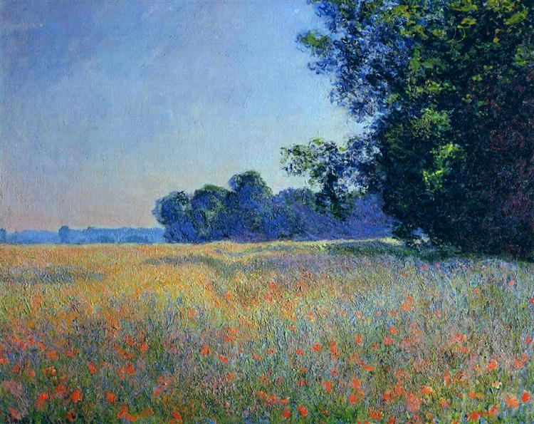
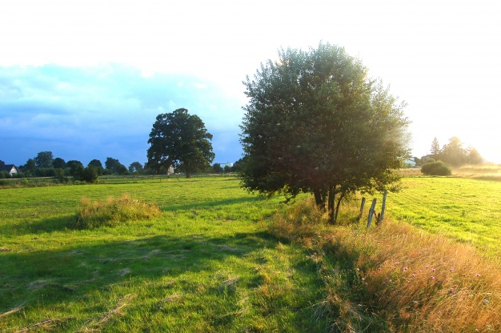
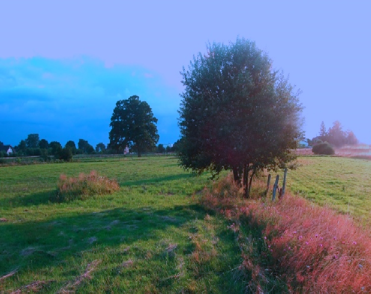
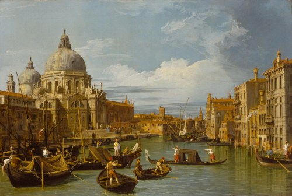
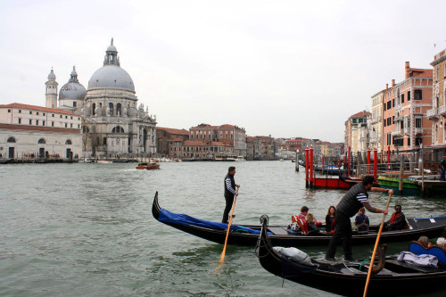
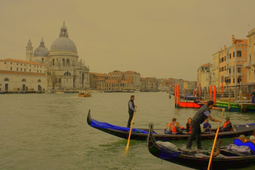

For this project, I chose to implement the color transfer algorithm proposed by Reinhard, et al. in their paper Color Transfer between Images. The paper describes a method to apply the color statistics of one image (the source) to another image (the destination). The destination image will then take on the appearance of the atmosphere of the source image. A limitation to this approach is that the images must be constructed similarly, i.e. images of vastly different subjects likely will not translate well. The remedy to this is to perform the algorithm on swatches of the image at a time, however this approach is beyond the scope of this project.
Additionally, this project implements a simple image scaling algorithm in order to simplify the transfer between images of differing sizes.
The process involved in color transfer between a source and a destination image includes these main steps:



